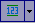
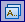
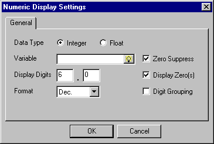
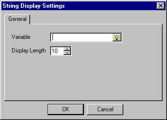
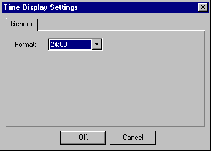
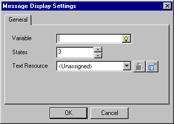

|
|
|
|
|
|
|
|
You can add a data display object (numeric, string, date, or time) or message display object to appear on the form. For more information on data displays, see Chapter 11, Displaying and Inputting Data. For more information on message displays, see Chapter 14, Creating Message and Image Displays.

To print a barcode in a form, set up the barcode using the printer control codes. Then use a numeric or string display to send dynamic data to the printer. You should also use a numeric or string display for other control codes that have dynamic data.
To add a data display to your form:
In the Form Editor, click the

icon or the
icon in the Form Editor toolbar.Select the data display object you want from the drop-down list, and click on the Form Editor where you want to position the data display object.
Define the formatting options in the dialog box that displays for the data display object. Each data display object shows different dialog boxes with different formatting options. For a description of the Numeric Display, String Display, Date Display, and Time Display properties, see Section 11.2.1, General Tab. For a description of the Message Display properties, see Section 14.2.1, General Tab.
Numeric Display

String Display

Date Display
Time Display

Message Display

You can add a message with dynamic content by creating a text resource with a time stamp and variable in the Label column. For more information, see Section 21.1.5.12, Setting Up Messages with Dynamic Content.
After the object is created, use the right-click menu to edit, move, copy, paste, or delete the object.